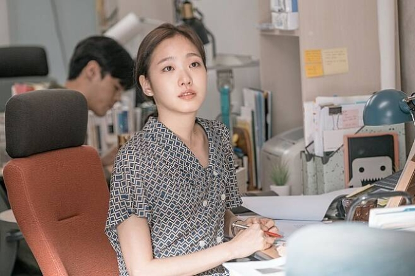
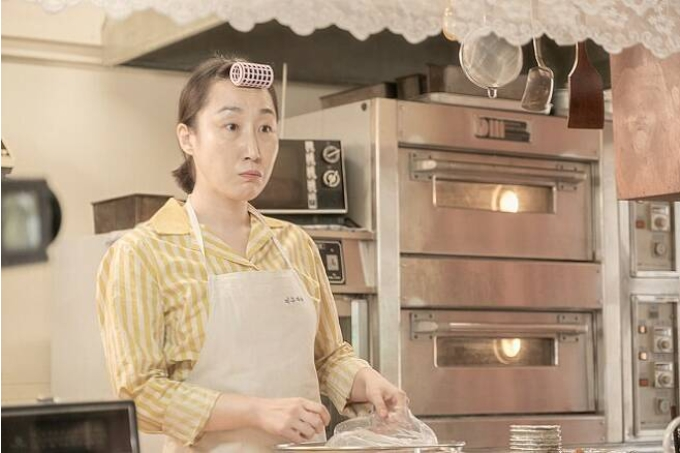
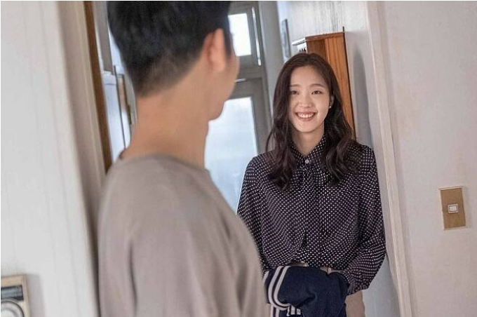

정해인과 김고은은 <유열의 음악앨범> 홍보를 위해 나온 '컬투쇼'에서 상대방의 성격을 의미하는 애칭을 음식에 빗대며 설명했다. 김고은은 정해인을 '청국장같은 남자'라고 표현하며
대학교 때부터 다녔던 청국장집이 갑자기 떠올랐고, 정해인이 진국같은 남자여서 청국장이라고 표현했다"
라고 말하며 나중에는 꼭 청국장이 아니어도 된다라며 곰국으로 변경해 모두를 웃음 짓게 했다.
이에 정해인은 김고은을 '쌀밥'에 빗대며
워낙 밥을 좋아한다. 하얗고 항상 우리 곁에 있다"
라며 김고은의 매력과 장점을 어필했다.
2.원래는 미수의 시점으로 그려지는 영화

정지우 감독은 <유열의 음악앨범> 인터뷰에서 원래 초고의 내용은 여자가 쓴 여자의 첫사랑 이야기였다고 밝히며 그 부분이 대단히 흥미로웠다고 밝혔다. 그동안의 첫사랑 영화들이 남성의 시선에서 그려졌던 것을 생각하면 너무 다르게 그려졌기 때문이다. 그 부분이 너무나 독특해서 영화화 과정에도 여성 시점으로 중심을 잡으려고 했다.
3.첫날밤에 손만 잡고 자게 만든 감독의 의도
-현우와 미수가 첫날밤 손만 잡고 자는 순수한 감성(?)에 대해 감독은 이 장면에서 두 사람이 처음 손을 잡게 되었다는 것을 보여주며, 손을 잡는게 그렇게 오랫동안 걸렸던 시대가 있었음을 보여주고 싶었다고 말했다.
-그리고 나서 다음 날 아침 키스가 아닌 뽀뽀만 하게 되는 장면 역시 그런 의도였다고 말했다. 현우와 미수가 만났던 그 시기는 뽀뽀지만 마치 뜨거운 것에 닿은 것 같이 느꼈던 시대였다고 말하며 그런 순간들이 나쁘지 않았음을 보여주고 싶었다고 말했다.
4.'대학로 할매'로 불린 은자 언니 김국희

-극 중 현우와 미수 사이를 오가며 두 사람을 챙겨주는 중심 인물로 등장하는 은자 언니역의 김국희는 오디션을 통해 이 작품에 합류했다. 그녀는 대학로 연극과 뮤지컬을 통해 이름을 알린 베테랑 연기지다.
-필모그래피도 화려하다. 뮤지컬 '레드북'으로 올해 제3회 한국 뮤지컬 어워즈에서 여우조연상을 받았으며, 대표작으로 대학로 뮤지컬 '빨래', '오 당신이 잠든 사이', '베르나르다 알바', '구내과 병원' 등에 출연했다.
-정지우 감독은 뮤지컬 '넘버'에 출연한 그녀의 모습을 보고 깊은 인상을 받아 그녀를 캐스팅하고 싶었다고 한다.
-뮤지컬 '빨래'에 고정적으로 출연했다. 이 작품에서 할머니역을 맡았는데, 2012년~2017년까지 무려 6년간 연기한 탓에 '대학로 할매'로 이름을 알렸다.
5. 정해인 최초 연하 배우 김고은

-<유열의 음악앨범> 출연전 드라마 <밥 잘사주는 예쁜 누나>에서 손예진, <봄 밤>에서 한지민 등 연상녀 선배 배우들과 주로 멜로 연기를 했다.
-김고은은 그의 멜로 연기중 최초의 연하녀 였던 셈. 이 때문에 처음으로 연하의 배우와 멜로 연기를 펼친 것에 대한 소감으로
행복했다"
라는 짧은 반응을 보여 눈길을 끌었다. 물론 연하라서 라기 보다는 너무나 호흡이 좋았기 때문이었다고 한다.
6.연애하면 연인에게 진심을 다하는 배우가 상대 여성배우에게 한 일
-<유열의 음악앨범> 인터뷰 당시 정해인은 자신의 연애 철학에 대해 연인을 배려하고, 솔직하고, 진심을 다하고 오랫동안 관계를 유지하는 것이라고 밝혔다.
-이러한 철학은 <밥 잘사주는 예쁜 누나>,<봄 밤>,<슬기로운 깜빵생활>을 통해 배운 것이었다고 말했다.
-그래서 <유열의 음악앨범>을 촬영할 때 상대 배운인 김고은에게 이러한 자세를 유지했다고 말했다. 그래서인지 김고은도 당시 인터뷰에서 정해인의 배려가 인상 깊었다고 말하며 촬영을 시작할 때부터 편안함과 친근함이 느껴져 함께 호흡을 맞추는데 신뢰가 생겼다고 말했다.